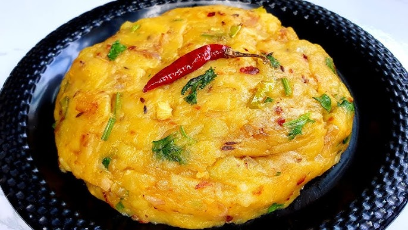

Odin Recipes
Home
Alu Bhorta

Description
Alu Bhorta is a traditional
Bangladeshi
side dish enjoyed with rice.
Ingredients:
Potato
Onion
Green chilli
Mustard oil
Salt
Steps:
Boil the potatoes.
Mash the potatoes with sliced onion and chillies.
Add mustard oil and salt.
Mix well.